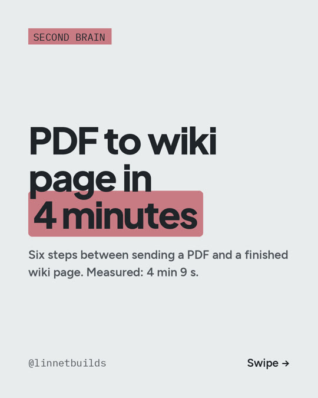

Carrusel: 2026-11-05
Los seis pasos entre mandar un PDF y tener lista la página de la wiki. Medido en la grabación de R01, el 2026-10-18: 4 min 9 s del celular a la página.

- Mandar el PDF o el enlace a un bot de Telegram, desde el celular.
- Llega a
raw/con una nota de dónde salió: enlace, texto del mensaje, fecha. El original no se edita nunca. - Un parser lo desarma: texto, tablas en HTML, ecuaciones en LaTeX, y figuras. Corre en mi propia computadora, así que leer el PDF no gasta tokens.
- Un agente escribe la página: la cita, la idea principal en una línea, una frase citable y las afirmaciones atadas al paper.
- La wiki se pone al día: el agente actualiza las páginas de conceptos que toca y marca las contradicciones. Una contradicción seria detiene la ingesta y me espera a mí.
- Avisa de vuelta: índice, registro y un resumen corto al celular. Un script nocturno, sin nada de IA, rearma la bibliografía (ver R06) y el panel.
La IA de pago solo hace los pasos 4 y 5. Todo lo demás son scripts.
El detalle completo, las herramientas, lo que hay que tener en cuenta y un prompt para probarlo: R01.
Costo (precios a oct 2026): el bot de Telegram, el parser (MinerU) y Obsidian son gratis (Obsidian para uso personal). El agente necesita Claude Code; lo mínimo es Claude Pro, $20/mes, que tiene límites de uso. Yo uso Max ($200/mes) para todo lo que construyo.
In English: six steps from sending a PDF to a finished wiki page, measured on the R01 recording: 4 min 9 s. The parser runs locally with no tokens; the paid AI only writes the page and updates the wiki. Minimum: Claude Pro, $20/month, with usage limits (Oct 2026).